Local review preview · The publication entry point is workshops/sandbox/index.html.
LiveLabs workshop · 1 of 15
IncidentData LiveStack — Adelaide workshop
Introduction
This workshop follows a synthetic payment-document comparison in the Adelaide, South Australia training profile. Start with the authorised data scope, examine a watch and its source records, compare search and graph views, and finish with the two Ask and agent routes plus the Data Room pipeline.
Estimated Time: 115 minutes
Objectives
-
Explain what the selected city and demo persona allow you to see.
-
Distinguish original incidents, contextual signals, vector comparisons, recorded links and AI drafts.
-
Compare the guided handler routes with the configured Select AI and agent framework routes.
-
Trace a synthetic ZIP through the seven Data Room stages.
Before you begin
-
Open the IncidentData LiveStack application on the demonstration machine. Confirm IncidentData LiveStack in the header.
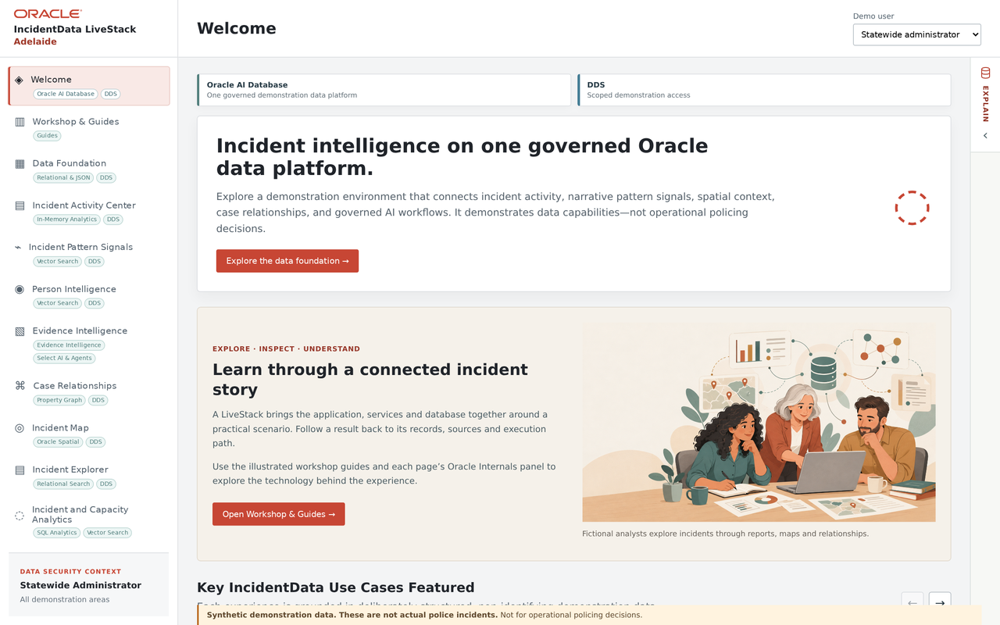
-
Use the Adelaide training profile and Statewide administrator demo persona for the main path. Your instructor should prepare the profile before learners begin. A restore changes shared application data; it is not a routine learner step.
-
Keep a second browser tab for this guide. Application counts, available cases, vectors, evidence and saved batches depend on the active profile, persona and preparation state. Read what your session actually shows.
-
Use only synthetic training material. The demo-persona selector illustrates scope; it is not production authentication. Do not use this application for operational policing decisions.
Route through the workshop
Start in Workshop & Guides to obtain the training package, then continue through Data Foundation and Scenes 2–12. The route ends at Scene 14: AI Opps; the earlier Data-Room2 preview chapter is intentionally left out of this cut. Short Redwood inspired animations are placed beside the duality, vector, security, watch graph, Ask, agent and Data Room explanations.
Credits and scope
This recut follows the requested Adelaide experience and the local IncidentData application/workshop source available on 23 October 2026. Conceptual illustrations are original project assets. They explain ideas; they are not screenshots of a live Adelaide restore or proof that every optional AI service is ready.
LiveLabs workshop · 2 of 15
Workshop & Guides — prepare the sample package
Introduction
Collect the supplied synthetic training material before opening the scene sequence. The package includes test archives and photos that can support later Data Room and person-comparison exercises.
Estimated Time: 8 minutes
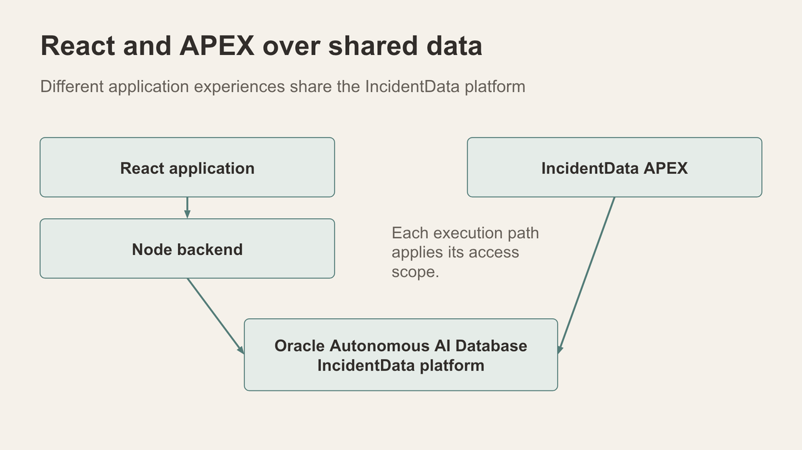
Objectives
-
Find the Part 2 Data Room guide and download its sample package.
-
Separate the outer download from the individual ZIP files intended for testing.
-
Keep the photos and their provenance available for the vector discussion.
Task 1: Open Part 2
-
In the app's left navigation, select Workshop & Guides. The page lists companion guides: Start here, Part 1 · React application, Part 2 · Data Room, Part 3 · Oracle APEX and a Deep Data Security lab. These complement this workshop; they do not replace these scenes.
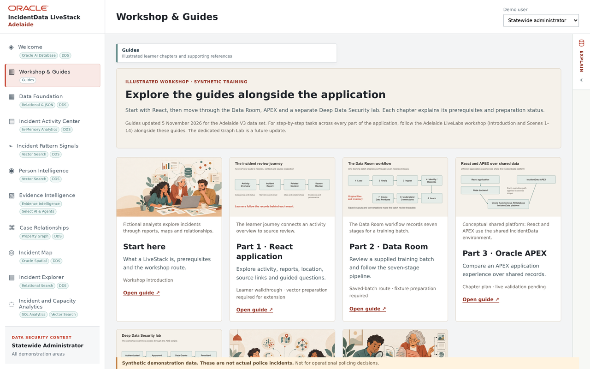
-
On the Part 2 · Data Room card, select Open guide ↗. The guide opens in a new browser tab.
-
Select Download Sample ZIP File. This downloads
Sep2026-Cases-V3-Sample-Data.zip (about 72 MB). Save it to a clearly named local folder and keep the original download intact.
Note: The Data Room's ZIP Loader also has a Download sample ZIP button. That one is different: it gives incidentdata-room-synthetic-sample.zip, a small eight-file batch for a quick upload test. Use the Part 2 package for this workshop.
Task 2: Unzip and inspect
-
Expand the downloaded outer package with your laptop's archive utility. On a Mac you may also see
__MACOSX folders and .DS_Store files; ignore them.
-
Inside
Sep2026-Cases-V3-Sample-Data/ you should find:
| Item | Contents |
|---|
| Seven case ZIPs | AliceSprings_Scenario_1A.zip, Brussels_Conference_Trail_2a.zip, Chris_Drugs.zip, Gianni_Money.zip, Scene200_Brussels.zip, Scene2b_Drug.zip, Scene4_Suga.zip |
POI_Photos/ | Nine fictional profile portraits, for example george-kaplan.png and philip-vandamm.png |
Face_Search_Photos/ | Ten test photos in pairs (dp1/dp2, eg1/eg2, mv1/mv2, nk1/nk2, tr1/tr2) |
-
Keep the individual case ZIPs separate. Each one is a single Data Room batch; do not upload the outer package as though it were one batch.
-
Note which photos are supplied synthetic material. They may be used later to discuss whole-photo vector similarity and person/narrative comparison, where the feature and prepared data are available. A photo similarity result is not an identity finding.
-
Do not upload, delete or rerun a batch yet. Scene 12 explains the pipeline and its prerequisites.
Continue
Move to Data Foundation and confirm the selected city and data scope.
LiveLabs workshop · 3 of 15
Scene 1: Data Foundation
Introduction
Establish the active Adelaide data and scope, then use the five presenter tiles to introduce the database capabilities. The tile examples are local teaching simulations, not edits to Adelaide records.
Estimated Time: 25 minutes
Objectives
-
Read the active profile and demo-persona context before interpreting any count.
-
Explore JSON duality, Vector Search, Property Graph, Spatial and Deep Data Security.
-
Locate the nine saved city profiles and distinguish profile review from restore.
Task 1: Read the foundation screen
-
Select Data Foundation. Confirm the app title, active city and Statewide administrator. Read the incident, category, persona and watched-pattern cards as current-session values rather than fixed numbers.
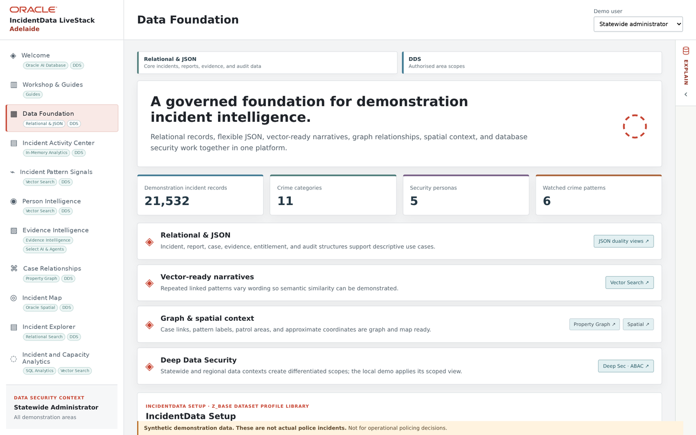
-
Talk through Relational & JSON, Vector-ready narratives, Graph & spatial context and Deep Data Security. Each panel introduces a capability; later scenes reveal the specific execution path.
-
Scroll to the saved dataset profile library beneath the foundation tiles. The nine city choices are Adelaide, Perth, Brisbane, Amsterdam, Brussels, Dublin, Boston, Chicago and Las Vegas. Review the saved profile information without changing the active data.
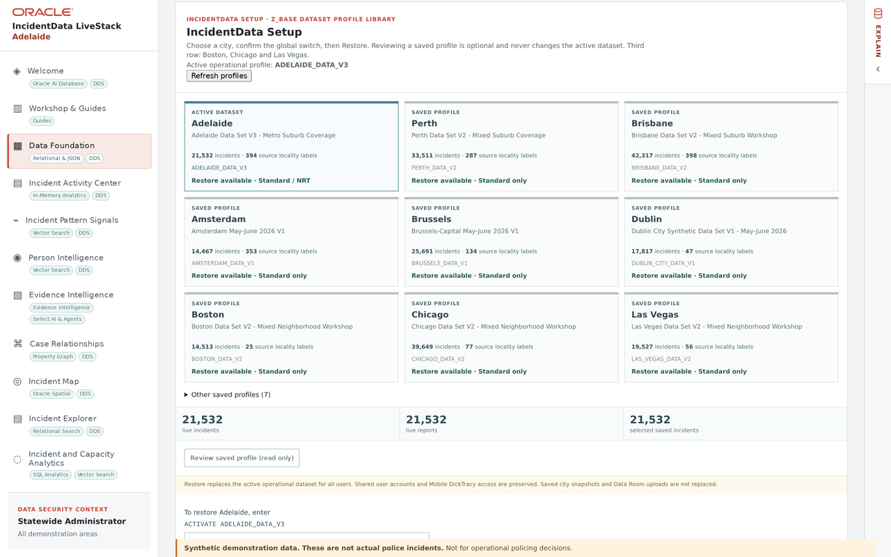
-
For an instructor-led reset only: on the Adelaide tile (ADELAIDE_DATA_V3, Adelaide Data Set V3 - Metro Suburb Coverage), type the confirmation
ACTIVATE ADELAIDE_DATA_V3 and select Restore Adelaide, under the session's approved backup/recovery procedure. Restore Adelaide NRT instead shifts incident times so the latest incident is now; standard restore keeps the saved May–June 2026 dates. Allow a few minutes, then wait for the active profile and counts to refresh. Do not interpret a loading placeholder as the final state.
Presenter note: Adelaide V3 spreads 21,532 synthetic incidents across 394 official Greater Adelaide suburbs. Each patrol area is one connected region: Adelaide Central (5,488 incidents), Northern & Western Adelaide (8,883) and Southern & Eastern Adelaide (7,161). The Central, Northern and Southern analyst personas each see only their own area. The earlier Adelaide V2 profile is still listed under Other saved profiles. A different city can be used after its profile and exercise prerequisites are checked.
Task 2: JSON Relational Duality Views
Animated pause: One incident, two views.
-
Select JSON duality views. In the invented
DEMO-101 example, compare related incident/report rows with one JSON document.
-
Choose Two views, one record, change the table status to Under review and observe the two displays change together. Reset the example.
-
Explain that a defined duality view maps selected rows to a document. JSON output alone does not establish that a duality view is deployed for every IncidentData endpoint.

Task 3: Oracle Vector Search
Animated pause: Similarity is a lead.
-
Select Oracle Vector Search, then See similarity. Compare Dog with the nearby Greyhound and Poodle examples; choose Car and read the changed ranking.
-
Explain that embeddings represent content numerically and distance helps rank related content. A score is not a probability or a person identification.
-
Later narrative and photo vector exercises require compatible prepared vectors in the selected profile. Check coverage before promising live matches.

Task 4: Property Graph and Spatial
-
Select Property Graph. Follow Alex to a bicycle at one hop and the shop at two hops. Name the nodes, edges and recorded link types; the layout itself creates no relationship.
-
Select Spatial. Compare Within distance at 1 km with In patrol area in its invented grid. One tests distance, the other area membership.
-
Relate these concepts to the later case views and approximate incident map without claiming every drawn graph or map invokes a native database graph/spatial operator.
Task 5: Deep Data Security
Animated pause: Scope before search.
-
Select Deep Sec · ABAC and Explore access decisions. Compare North and Statewide area scope while keeping the other attributes visible.
-
Explain why a broader area can allow an additional standard record while a restricted record remains unavailable.
-
Reset the example. The tile is a local simulation; application scoped views and separately installed native DDS identities/grants are distinct demonstrations.
Continue
Open Incident Activity Center to read current authorised Adelaide activity.
LiveLabs workshop · 4 of 15
Scene 2: Incident Activity Center
Introduction
Begin with descriptive Adelaide activity before following one lead. Counts change with the selected profile, persona, record dates and filters.
Estimated Time: 6 minutes

Objectives
-
Read the current authorised incident and open-record totals.
-
Separate watched patterns, community signals and area coverage.
Task 1: Read the cards
-
Select Incident Activity Center with Statewide administrator selected. Record Authorised incidents, Open records, Watched crime patterns, Community signals and Area coverage.
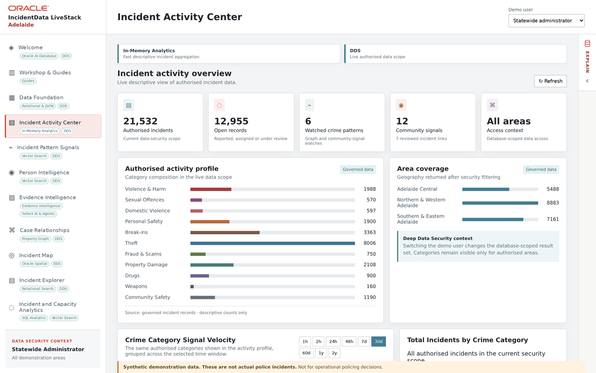
-
Compare Central, North and South where the prepared Adelaide profile shows them. If a short relative-time chart is empty, inspect its date window against the stored record dates before drawing a conclusion.
-
If the presenter is demonstrating scope, change to a regional demo user, wait for figures to refresh and record the difference. Return to Statewide administrator before continuing.
Task 2: Explain the measures
Distinguish a stored incident from a watched pattern and a contextual community signal. A smaller regional total demonstrates different application results; it does not by itself prove native database DDS enforcement.
Continue
Use Incident Pattern Signals to move from the overall view to the payment-document watch.
LiveLabs workshop · 5 of 15
Scene 3: Incident Pattern Signals
Introduction
Follow a named payment-document watch while keeping authorised incident records separate from external context and similarity suggestions.
Estimated Time: 12 minutes

Objectives
-
Read the selected watch's scenario-ready panel without treating it as a finding.
-
Explain the graph's nodes, links and display filters.
-
Open a source incident from a selected graph node.
Task 1: Select the watch
-
Select Incident Pattern Signals. Under Watched Crime Patterns, choose Payment-Document Anomaly Chain if it is available in the active Adelaide profile. Wait for the source trail to finish loading.
-
Read SCENARIO READY · AUTHORISED RECORDS + CONTEXTUAL SIGNALS. Record the actual linked-incident count, contextual-post count and case reference shown in this session.
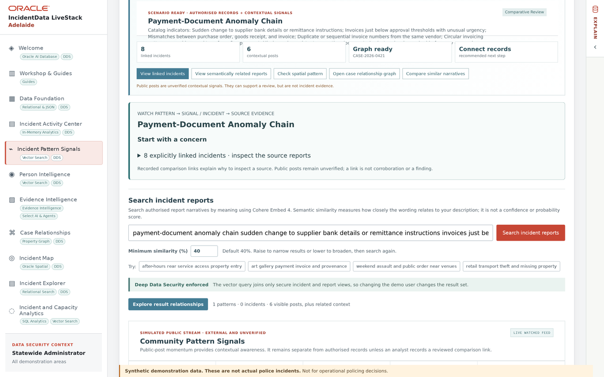
-
Explain that the watch identifies records to inspect. Simulated public posts are unverified context, not an incident report or corroboration.
Task 2: Explore result relationships
Animated pause: A graph is a trail to inspect.
-
Select Explore result relationships and wait for authorised relationships to load.
-
Read the legend: W for watch, I for incident and P for contextual post. Explain recorded membership, reviewed comparison and semantic similarity as different link types.
-
Compare the scenario's explicit watch links with the graph's total visible nodes; bounded related context may add more incidents.
-
In Show records, clear Public posts. Observe the new node and connection totals. This is a display filter; it does not delete source material.
-
Select a visible incident node. Read its detail card and choose its source-detail route if offered. Record that incident reference for Scene 8, then close the graph.
Task 3: Handle an unavailable watch
If this watch, its source trail or compatible vectors are unavailable after the Adelaide restore, use a different populated watch and record its label. Explain the missing prerequisite rather than inventing a case ID or result count.
Continue
Inspect fictional person context and the limits of narrative and photo comparison.
LiveLabs workshop · 6 of 15
Scene 4: Person Intelligence
Introduction
Person Intelligence brings fictional profiles, their identifier register and photo context into review. The register records who captured each alias, username, email or phone number, who reviewed it, and when it was valid. Vector similarity helps find candidates; it does not identify a person or decide responsibility.
This scene uses George Kaplan (POI-NBNW-GEORGE) because, in the Adelaide V3 profile, he has four linked incidents in scope and a register that shows every state you need: current, expired and awaiting review.
Estimated Time: 12 minutes
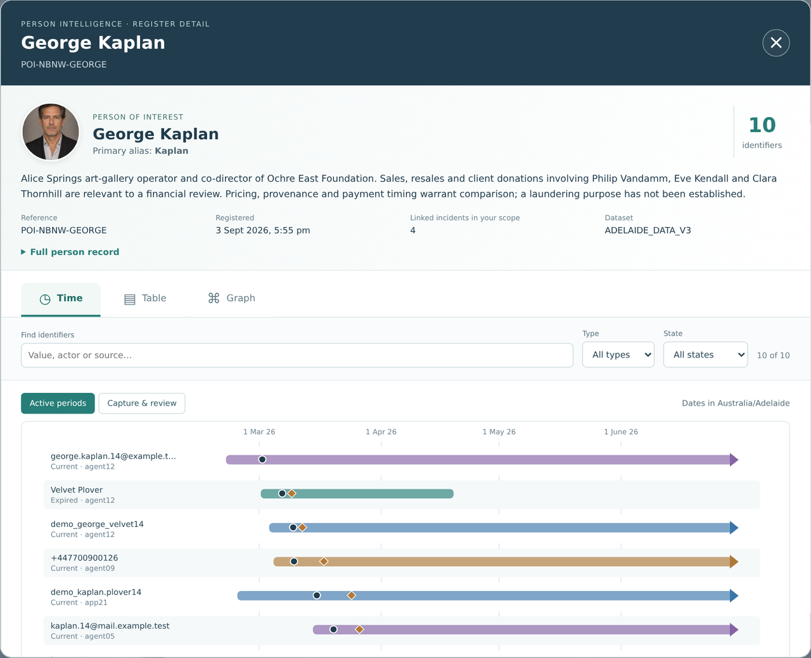
Objectives
-
Open a fictional profile and its register detail.
-
Read the identifier register three ways: Time, Table and Graph.
-
Distinguish validity, administrative review and identity confirmation.
-
Compare narrative and photo-vector search as distinct inputs.
Prerequisites
-
The active dataset is ADELAIDE_DATA_V3. The register detail shows the dataset name; dates should read Dates in Australia/Adelaide.
-
The current persona can see
POI-NBNW-GEORGE. Linked-incident counts depend on the persona's scope.
Task 1: Select a profile
-
Select Person Intelligence. The Authorised POI profiles list shows each profile's reference, alias and readiness.
-
Select POI-NBNW-GEORGE · George Kaplan. Selected Profile shows his alias (Kaplan), summary, status (person of interest) and the two stored vectors: 384d narrative vector and 512d visual vector.
-
Note that the summary is authored profile text. It describes a line of enquiry, not a finding: "a laundering purpose has not been established".
Task 2: Open the register detail
-
Select George Kaplan's round portrait in Selected Profile. The small ↗ badge shows that it opens the record. You can also focus it with the keyboard and press Enter.
-
The Person Intelligence · Register Detail window opens. Confirm:
-
10 identifiers
-
Linked incidents in your scope: 4
-
Dataset: ADELAIDE_DATA_V3
-
Expand Full person record. It contains the full narrative, the profile attributes and Recorded incident links, for example
ACI-2026-16323 · Fraud, deception and related offences. Each link states its own limits, such as "attribution remains unconfirmed". Collapse it again.
Task 3: Read the register in time
The register opens on Time.
-
In Active periods, each bar is one identifier's validity period. An arrow at the right edge means the period is open-ended; the chart does not invent an end date.
-
Find Velvet Plover. Its bar stops in April: this alias is Expired. Every other identifier is current.
-
Select Capture & review. The bars are replaced by events: a dot (●) where an identifier was captured and a diamond (◆) where it was administratively reviewed.
george.kaplan.14@example.test has a capture dot but no diamond, because it is still awaiting review.
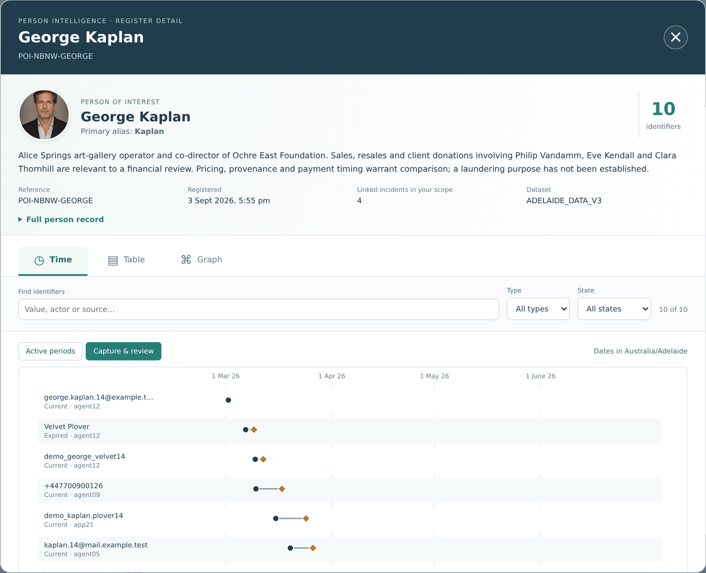
Teaching point: Current and Expired are validity states. Administrative review is a separate step, and it does not confirm identity or account ownership.
Task 4: Read the register as a table
-
Select Table. Each row shows the identifier, its type and platform, state, who captured it and when, who reviewed it, and when it stops being valid.
-
Check these rows:
| Identifier | Type / platform | State | Reviewed by | Valid to |
|---|
| george.kaplan.14@example.test | email | Current | Awaiting review | Open-ended |
| Velvet Plover | alias | Expired | reviewer02 | 19 Apr 2026 |
| demo_george_velvet14 | username / telegram | Current | reviewer08 | Open-ended |
| kappa66 | username / unspecified | Current | reviewer04 | Open-ended |
-
Use the filters above the table. They apply to Time, Table and Graph alike:
-
Set State to Expired. Only Velvet Plover remains.
-
Set State back to All states, then set Type to alias. Velvet Plover, Kaplan, G. Kaplan and GK remain.
-
Type
reviewer08 in Find identifiers to see every entry that reviewer touched. Clear the filters before continuing.
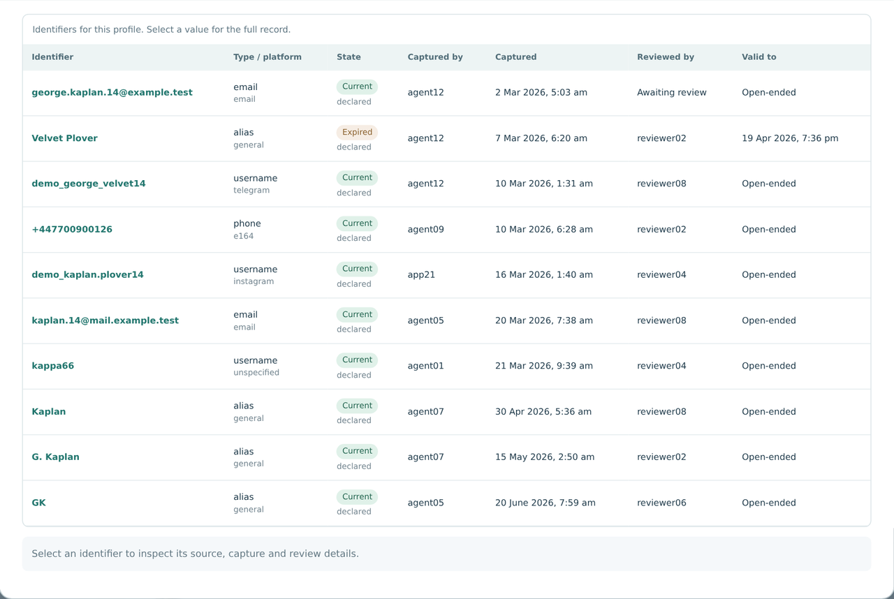
Task 5: Read the register as a graph
-
Select Graph. George Kaplan sits at the centre (POI). Each identifier is a node coloured by type: alias, username, email or phone. The grey nodes are the people and apps that captured or reviewed each entry, for example
agent12 and reviewer02.
-
Read the legend. A dashed line is a review; a dashed node outline is an expired identifier. Find Velvet Plover's dashed outline.
-
Select Velvet Plover. Its detail panel shows:
-
captured by agent12 on 7 Mar 2026
-
reviewed by reviewer02 on 9 Mar 2026
-
valid from 1 Mar to 19 Apr 2026
-
source reference
register:city-poi-identifiers:v1:2026-10-20
-
the note that its validity has ended and it is excluded from current matching
-
Clear Show capture and review actors. The graph reduces to George and his 10 identifiers. Use +, − and Fit graph to zoom, then turn the actors back on.
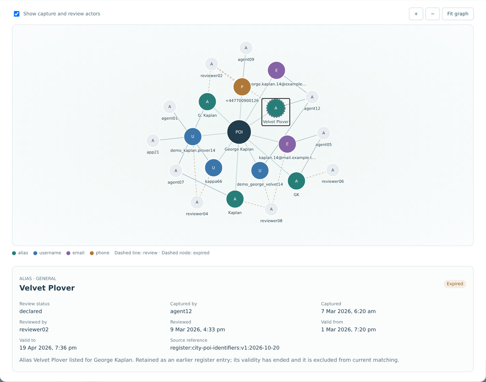
Note: In the graph, both aliases and actors carry the letter A. Colour tells them apart: teal for aliases, grey for actors.
This network is drawn in the browser from the secured register query. It is not an Oracle SQL property graph; Scene 6 covers that.
-
Press Escape or select × to close. Focus returns to the portrait.
Task 6 (optional): A busier register
-
Select POI-NBNW-PHILIP · Philip Vandamm, George's gallery client, and open his register detail. It has 13 identifiers.
-
In Table, set State to Proposed. Three aliases remain:
vanders, pippster and pippy. They were captured but not yet accepted into the register. Set State back to All states.
-
Compare his Graph with George's. More identifiers and reviewers make it denser, which is when the filters and Show capture and review actors become useful.
Task 7: Explore vector comparisons
Animated pause: Similarity is a lead. The final beat connects the teaching example to narrative and supplied-photo comparisons.
-
Reselect George Kaplan. Under Narrative vector search, the box may already hold a suggested description. Replace it with art gallery sales and client donations and select Search narratives.
-
Results are ranked by narrative similarity: George Kaplan first (about 0.57), then Eve Kendall, Philip Vandamm and Clara Thornhill. Exact scores can vary with the embedding model. Related wording ranks nearby profiles, so read each summary before discussing a candidate. A high score means similar wording, not involvement.
-
Under Visual vector search, choose a test image using only the supplied synthetic photos from the sample package or an existing prepared batch. Record the model, threshold and source shown by the interface. A whole-photo similarity result may reflect scene composition; it is not facial identity proof.
-
Both searches generate model vectors outside the application UI. Oracle then ranks authorised rows with
VECTOR_DISTANCE(..., COSINE) through secure_persons_of_interest_v. If a profile lacks compatible embeddings or a photo set, explain the prerequisite and use the conceptual vector tile from Scene 1. Do not invent a match.
Continue
Check whether the active scope has an Evidence Intelligence pack. George Kaplan's art-market incidents are a natural thread to follow.
LiveLabs workshop · 7 of 15
Scene 5: Evidence Intelligence
Introduction
Check available source material before making an evidence claim. Visibility can differ across Adelaide profile restores and demo personas.
Estimated Time: 5 minutes

Objectives
-
Establish whether scoped evidence items and case context are visible.
-
Trace any displayed item to its original source.
Task 1: Inspect availability
-
Select Evidence Intelligence. Wait for the summary cards and filters to load.
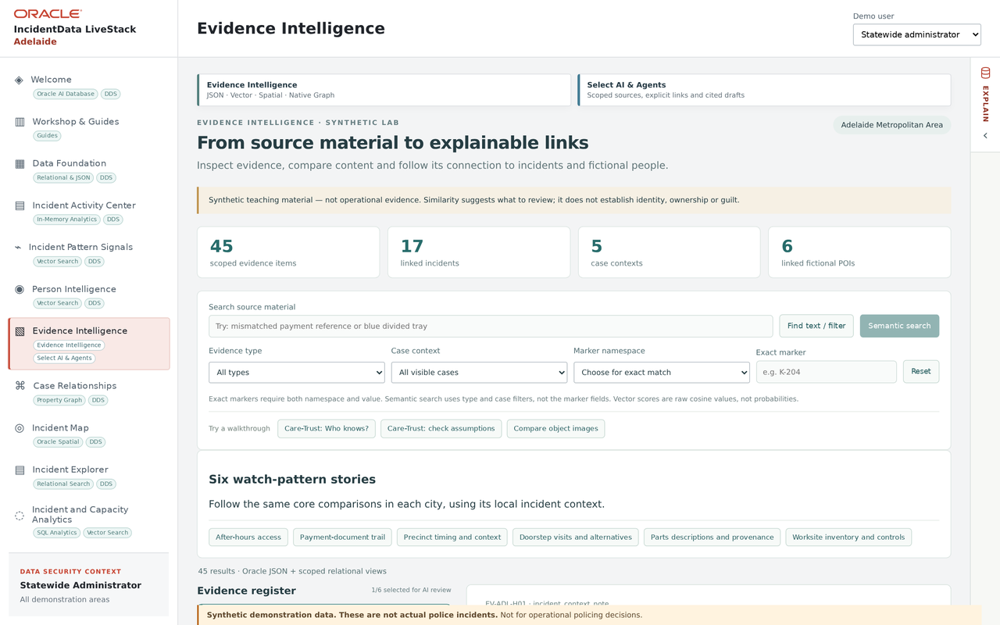
-
Record the visible evidence-item, incident, case and fictional-person counts. If the screen says no pack is visible, state that limitation and do not demonstrate an imaginary result.
-
If items exist, choose one, inspect its source label and link type, and distinguish original content from AI descriptions or similarity suggestions.
Continue
Use Case Relationships to follow recorded case links, regardless of whether a dedicated evidence pack is present.
LiveLabs workshop · 8 of 15
Scene 6: Case Relationships
Introduction
Use a payment-document case that exists in the active Adelaide scope. Compare the graph presentations while keeping the same case and underlying sources in view.
Estimated Time: 10 minutes

Objectives
-
Inspect the case's incident, fictional-person and evidence-reference context.
-
Compare all four graph-view choices, especially Oracle Graph Explorer.
Task 1: Select a case and source
-
Select Case Relationships and choose the case referenced by the payment-document watch. Record its actual reference before presenting the graph.
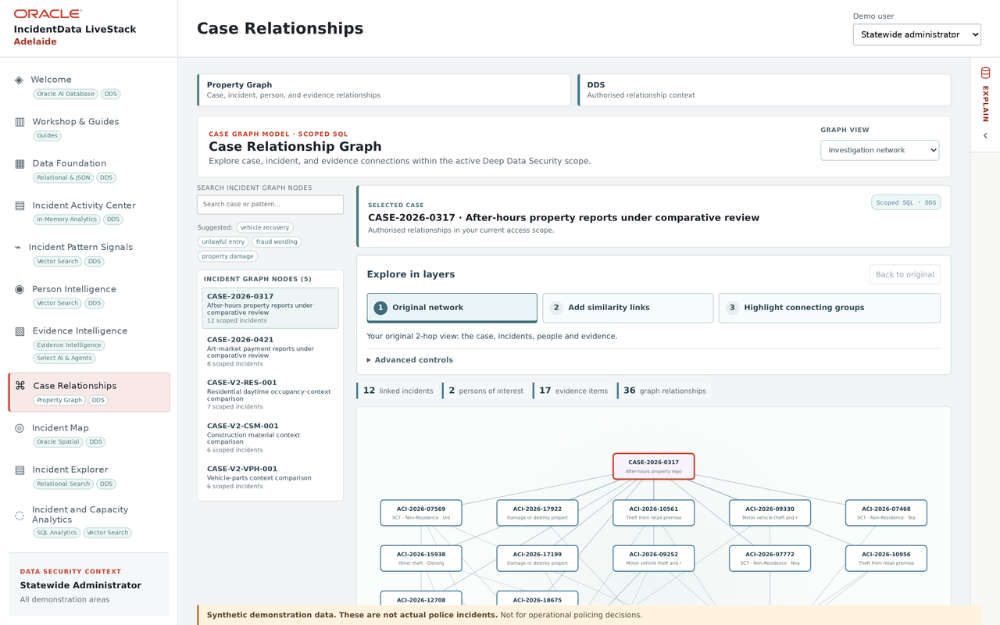
-
Read the case summary and node/link counts. Open a connected incident or detail card and identify the original record behind one link.
Task 2: Compare graph views
-
Switch through all four view choices displayed in this build, holding the same case constant. The known options include Pathway Style, Force-directed network and Oracle Graph Explorer; read the fourth option's exact label from the live screen rather than inventing it.
-
In each view, point out how layout, clustering or exploration controls change the way relationships are inspected. Explain which links are recorded and which are optional similarity comparisons.
-
Spend extra time in Oracle Graph Explorer: select a node, follow one edge and use the available details to return to a source. If the Explorer needs separate configuration or does not load, record that result and continue with the available views.
Interpretation: A graph drawing can render scoped relational links, while other features may query a native database graph. The visual style alone does not prove the database execution mechanism or a common offender.
Continue
Add approximate geographic context in Incident Map.
LiveLabs workshop · 9 of 15
Scene 7: Incident Map
Introduction
The map adds approximate location context to authorised records. Its drawn markers can be fewer than all matching incidents.
Estimated Time: 8 minutes

Objectives
-
Use category, area, status and time controls.
-
Explain map precision and marker limits.
-
See how database security changes what each persona can map.
Task 1: Inspect the map
-
Select Incident Map. Read the summary cards: Displayed map markers (for example, 2,500 of 21,532 matching records), Active incidents, Suburbs represented and Priority markers.
-
The map draws the most recent 2,500 markers by default. Under Markers to draw, choose All matching markers and select Update map. Incidents now fill the metropolitan area across 394 suburbs.
Note: Filter changes apply only when you select Update map. Until then, the summary cards still describe the previous view.
Task 2: Filter by patrol area
-
Under Patrol area, choose Northern & Western Adelaide and select Update map. The markers form one region: the coast from Henley Beach and Seaton north through Port Adelaide, and the northern suburbs from Enfield to Elizabeth and Golden Grove. Displayed map markers should read 8,883 of 8,883 when all markers are drawn.
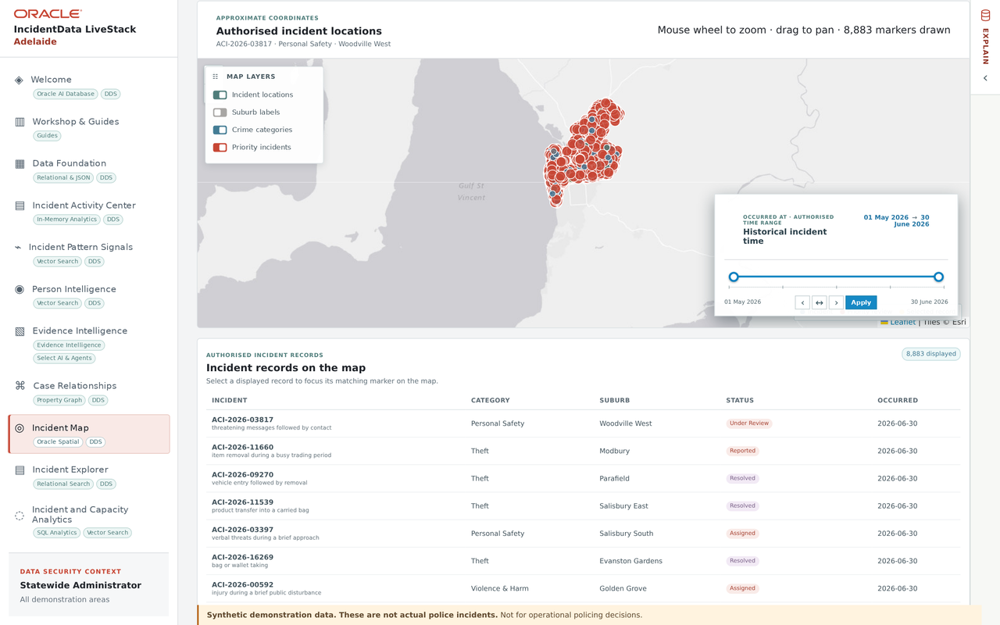
-
Repeat with Adelaide Central (the CBD and inner suburbs, about 7 km out) and Southern & Eastern Adelaide (Glenelg and Marion south to Seaford, plus the eastern suburbs and hills).
-
Change one more filter at a time (category, status or month) and explain the observed change. Return Patrol area to All authorised areas when you finish.
Task 3: Compare personas
-
In Demo user at the top right, choose Northern analyst. Without any filter, the map shows only Northern & Western Adelaide: Displayed map markers reads 2,500 of 8,883 because the marker limit returns to its default. The database's scoped view, not the map, removes the other areas.
-
Try Central analyst and Southern analyst, then return to Statewide administrator.
-
If a marker opens a detail, compare its approximate position with the source report's location wording.
Interpretation: Each point is an approximate synthetic location inside the named suburb, not an address. Display limits and clustering can reduce drawn markers. Nearby positions do not establish a common event or causal relationship.
Continue
Use Incident Explorer to inspect original report detail with several search methods.
LiveLabs workshop · 10 of 15
Scene 8: Incident Explorer
Introduction
Move from a watch, map marker or graph node to an original incident report. This scene also compares the available search controls.
Estimated Time: 8 minutes

Objectives
-
Find records through free text and structured filters.
-
Read report details and distinguish them from computed links.
Task 1: Compare search methods
-
Select Incident Explorer and allow records and filter lists to load.
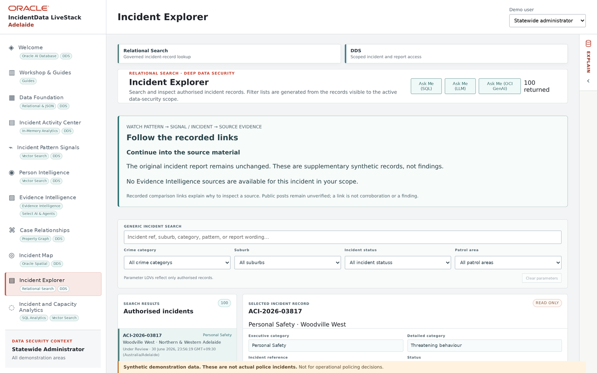
-
Try GENERIC INCIDENT SEARCH with a phrase or the incident reference recorded in Scene 3. Move focus away from the field if needed, then wait for the result count to update.
-
Clear that search. Compare category, suburb, patrol area, status and other available filters one at a time. Record which controls narrow the result set in your Adelaide session.
Task 2: Read one result in detail
-
Open one returned incident. Read its reference, category, status, dates, approximate location, REPORT SUMMARY and REPORT NARRATIVE.
-
Check the read-only attributes and any person/evidence counts. Distinguish the source report from a watch membership, semantic match or analyst interpretation.
-
Record the incident reference for later discussion. Clear search filters when finished.
Continue
Return to aggregate patterns in Incident and Capacity Analytics.
LiveLabs workshop · 11 of 15
Scene 9: Incident and Capacity Analytics
Introduction
Place individual Adelaide reports in descriptive historical context. Relative-time panels depend on the stored incident dates.
Estimated Time: 6 minutes

Objectives
-
Read incident demand, workload and trends within the active scope.
-
Explain the difference between descriptive counts and prediction.
Task 1: Explore the panels
-
Select Incident and Capacity Analytics. Start with Incident Demand.
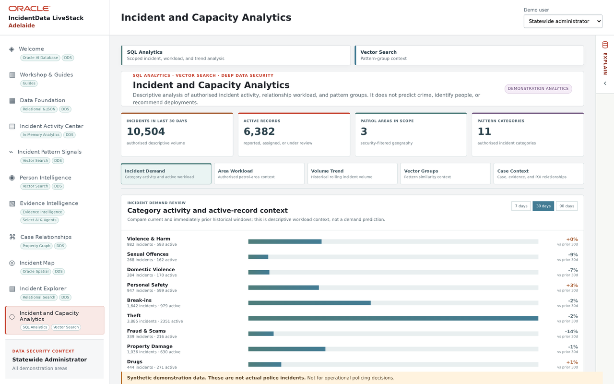
-
Inspect Area Workload, Volume Trend, Vector Groups and Case Context if populated. Record the date window and active persona alongside any figures you present.
-
If a recent-period result is empty, compare the window with the dates in the saved Adelaide profile before interpreting it.
Interpretation: Historical volumes and groupings describe returned records; they do not predict incidents or recommend deployment.
Continue
Compare the two routes for asking questions of authorised data.
LiveLabs workshop · 12 of 15
Scene 10: Ask IncidentData
Introduction
The page presents two ways to ask about authorised data. Keep the SQL-handler guided route separate from the configured Select AI route that may invoke an LLM.
Estimated Time: 10 minutes

Objectives
-
Inspect one reviewed, read-only guided SQL question.
-
Observe a configured Select AI question if that service is ready.
-
Relate native AI activity to the later AI Opps dashboard.
Task 1: Bottom Ask route — SQL handler
Animated pause: Two ways to ask.
-
In the lower Ask area, choose a displayed guided question. Select Show SQL before running it where that response mode is available.
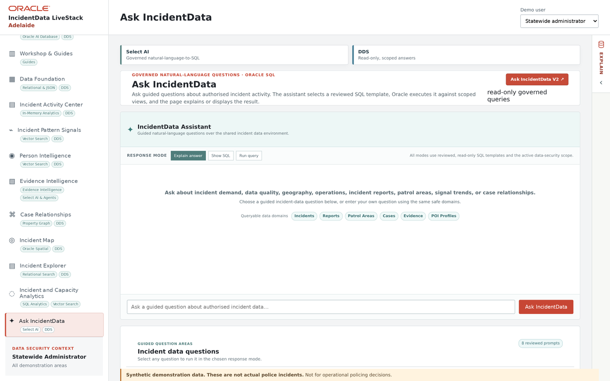
-
Read the reviewed SQL template, active scope, date conditions and returned row count. Use Run query or Explain answer to compare output modes.
-
Explain why a handler-wired, read-only query can be efficient and predictable. It maps the question to approved SQL; it is not evidence that an LLM generated the query.
Task 2: Top Ask route — Select AI
-
In the upper Ask area, use the prepared Select AI example if the configured service is available. Record the question, actual response and any SQL or source context exposed by the page.
-
Explain that this route can use a configured LLM. Compare its answer with the guided route without assuming the same execution path or identical wording.
-
Later in AI Opps, look for the corresponding native AI activity. If configuration, permissions or provider access are missing, show the visible state and do not claim that an LLM call completed.
Continue
Compare guided and native agent execution in AI Agent Console.
LiveLabs workshop · 13 of 15
Scene 11: AI Agent Console
Introduction
Compare a lower, handler-wired Run agent route with the upper route built around the configured AI Agent Framework. Both need reviewable results and clear source scope.
Estimated Time: 10 minutes

Objectives
-
Review the Signals, Requests and Logistics specialist contexts.
-
Distinguish a guided PL/SQL/SQL handler workflow from a native agent team using tasks and permitted tools.
-
Inspect audit activity and connect native AI calls to AI Opps.
Task 1: Bottom Run agent route — guided handler
Animated pause: Two ways to run an agent.
-
Select AI Agent Console. Review the Signals, Requests and Logistics cards and their available guided tools.
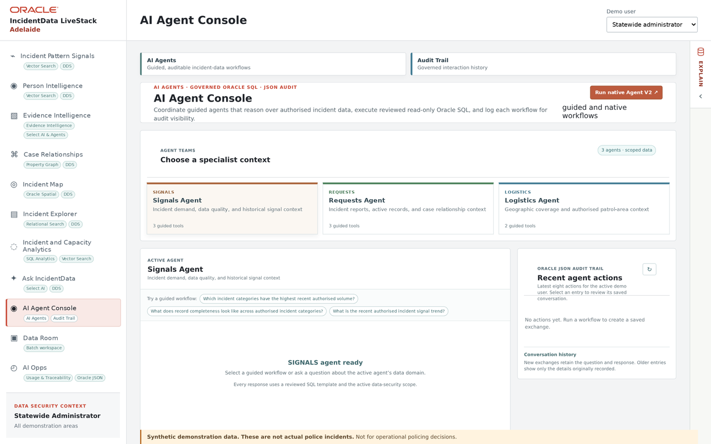
-
In the lower Run agent area, choose a prepared guided workflow. Inspect its reviewed, scoped query/result and any saved action in Recent agent actions.
-
Explain the handler-wired route as a controlled way to package database work. The exact PL/SQL handler implementation should be confirmed from the deployed build before presenting code-level detail; a guided answer alone does not prove an LLM call.
Task 2: Top route — AI Agent Framework
-
In the upper agent area, use a prepared native agent example if the framework and model are configured. Identify the agent or team, tasks, permitted tools, actual output and any cited source context.
-
Explain that this route can call an LLM and orchestrate database tools. Review the recorded action rather than inferring completion from a card or button.
-
Find its native activity later in AI Opps. If the service is unavailable, record the visible state and keep the guided route as the completed exercise.
Continue
Move to the separate synthetic-document pipeline in Data Room.
LiveLabs workshop · 14 of 15
Scene 12: Data Room
Introduction
Use a prepared saved batch, or one case ZIP from the Workshop & Guides sample package, to explain how synthetic files become traceable descriptions, connections and data products. The saved Alice Springs batch is separate from the Adelaide incident watch.
Estimated Time: 14 minutes

Objectives
-
Explain all seven pipeline stages and the state of one selected batch.
-
Use the five workspace tabs to navigate its outputs.
-
Keep original files, AI drafts, connection suggestions and saved products distinct.
Task 1: Choose a prepared batch
-
Select Data Room. Under Choose your batch, keep Open existing batch selected. Batch Load History lists the latest batches visible to the current demo user.
-
Find
AliceSprings_Scenario_1A.zip and select Open. Another batch may be marked Selected from earlier work; make sure the Alice Springs batch is the one open before continuing. Its history row reads 18 items · Synthetic travel CSVs, inventory-related messages, financial rows, and unverified scene photos.
-
Expand Batch details & processing status. It shows when and by whom the batch was loaded, the ZIP and expanded sizes, and the status of each of the seven stages. Record the batch ID and stage status shown in this session. At the time of writing, the Alice Springs batch had stages 1–6 complete and stage 7 pending.
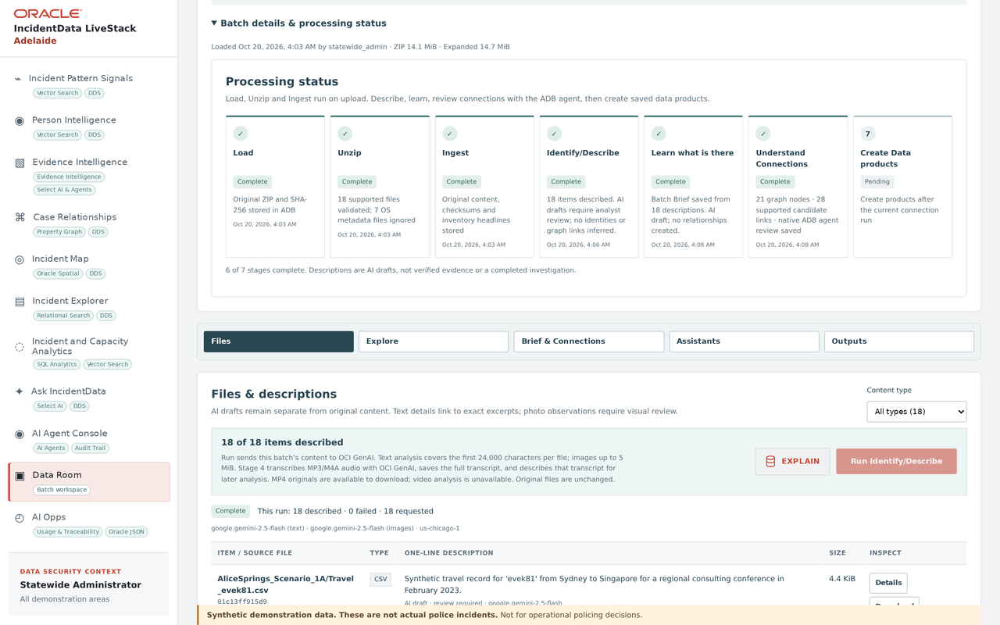
-
If demonstrating a new upload instead, select Upload new ZIP to open the ZIP Loader:
-
Check the limits it lists: 20 MiB ZIP, 100 files, 8 MiB per file, 40 MiB expanded; TXT, CSV, JSON, JPG/JPEG, PNG, MP3, M4A and MP4; no encrypted or nested archives.
-
Choose one individual case ZIP from the sample package, never the outer package or real evidence.
-
Tick I confirm this ZIP contains synthetic training data only, then select Load ZIP.
-
For a quick test, Download sample ZIP gives a small eight-file batch.
-
After loading, expand Batch details & processing status. Load, Unzip and Ingest should show Complete. Unzip reports how many supported files were validated and how many operating-system metadata files were ignored. Until stage 4 runs, the Files tab marks each one-line description Inventory-derived · not AI-generated. A zero shown while requests are still running is not a final inventory.
Task 2: Explain the seven stages
Animated pause: From ZIP to review pack.
The stage names below match Batch details & processing status.
-
Load: retain the original ZIP, assign a batch ID and store its SHA-256 checksum.
-
Unzip: extract and validate the supported files from that individual ZIP.
-
Ingest: store original content, checksums and inventory headlines.
-
Identify/Describe: run from the Files tab with Run Identify/Describe. It sends the batch's content to OCI GenAI and creates AI descriptions that remain drafts linked to the original files.
-
Text analysis covers the first 24,000 characters of each file.
-
Images are analysed up to 5 MiB.
-
MP3/M4A audio is transcribed and the transcript is described.
-
MP4 originals can be downloaded, but video analysis is unavailable.
-
Learn what is there: run from Brief & Connections with Run batch learning. Saved descriptions are summarised into a source-linked Batch Brief.
-
Understand Connections: run from Brief & Connections with Run connections. Source links, declared synthetic cast/scene context, whole-photo similarity and the ADB agent's review are kept separate. For Alice Springs, the stage reports 21 graph nodes · 28 supported candidate links · native ADB agent review saved.
-
Create Data products: run from Brief & Connections with Create / reopen data products. It saves a versioned review pack with a manifest and the available outputs.
Load, Unzip and Ingest run on upload. Each later stage has its own control and waits for the stage before it, and may invoke configured AI services. Explain incomplete or failed stages before moving on.
Task 3: Use the workspace tabs
-
Files: under Files & descriptions, filter by Content type, then use Details on one item to open its source reference. Download retrieves the unchanged original.
-
Explore: under Choose what to explore, five tiles show what the batch supports: Money Flows, Messages, Travel, People mentioned and People & Photos. Each is marked, for example, Ready to analyse or Not recognised, depending on the batch's content. Inspect themes and candidate connections without treating a suggestion as a fact.
-
Brief & Connections: read the Batch Brief, its citations, the Connections & Person / Photo Graph and the Saved review pack.
-
Assistants: two specialisations, the Batch Assistant and the Crime Expert Assistant, answer questions about the saved content. Start with a suggested prompt such as What does this batch contain? and check each response against the saved files and brief.
-
Outputs: use Open saved review packs to open a completed, versioned data product when one exists; state when none exists. Virtual Detective Room & Video Briefing can generate an AI-drafted room and briefing for the batch. Treat it as an AI draft that needs analyst review.
Continue
Finish by inspecting the AI activity and measurement trail in AI Opps. View AI activity ↗ at the top of the Data Room links there.
LiveLabs workshop · 15 of 15
Scene 14: AI Opps
Introduction
Close the demonstration by showing what AI activity was recorded and what usage measures are available. Scene 13 from the earlier cut is omitted, so this chapter keeps the requested Scene 14 label.
Estimated Time: 6 minutes

Objectives
-
Find activity from the prepared Select AI and agent-framework examples.
-
Explain measured, unavailable and non-AI work without inventing token counts.
Task 1: Read the activity view
-
Select AI Opps. Review activity filters, application areas, usage summary and token-coverage explanation.
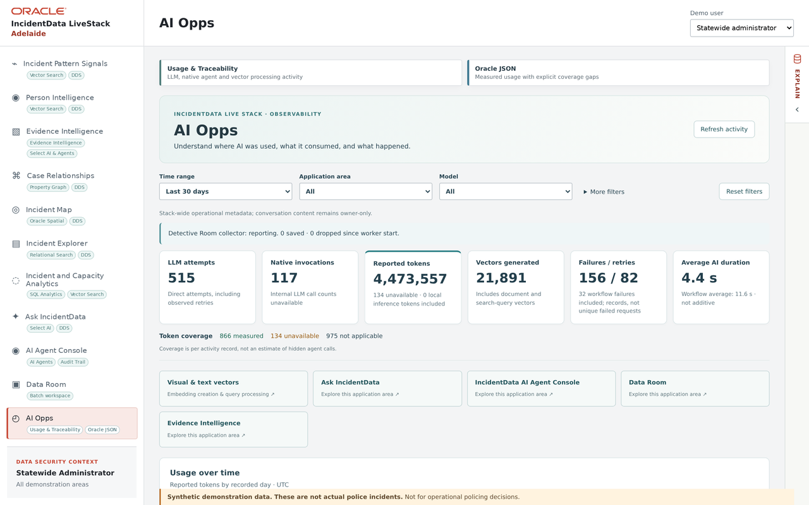
-
Filter for any native Select AI question from Scene 10 and native agent action from Scene 11 that actually completed. Note the action, time, provider and reported tokens when those fields are present.
-
Contrast those entries with the guided SQL and handler routes. A reviewed query can be useful without invoking an LLM; an empty AI activity list does not mean the guided exercise failed.
-
Explain why native invocation tokens may be unavailable even when another usage measure is shown. Do not infer a missing count.
Finish
Summarise one original source record, one computed comparison, one recorded link and one AI draft or action. State the active Adelaide scope and any optional exercise that was unavailable in this session.